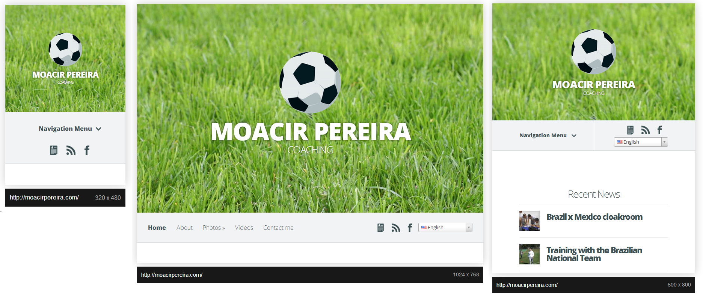
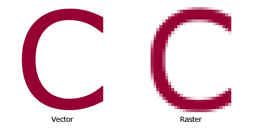

Simpósio Mineiro de Engenharia de Software | Agosto/2014
Agenda
Apresentação do instrutor e presentes
Apresentação da Avenue Code
Objetivo do mini curso
Contexto Histórico
Contexto Mobile
Diferença entre o desktop e o dispositivo móvel
Agenda
Responsive Web Desing
Layout Fluído
Layout Adaptável
Conteúdo Flexível
Mobile First
O Desafio
A proposta
Como construir Mobile First
Agenda
Bônus
Boas práticas de alta performance
Acessibilidade
Lucas Estevão
24 anos, de Belo Horizonte, desenvolve front end há mais de cinco anos. Cofundador da startup Monkey Mob, atualmente trabalha como UI Engineer na Avenue Code, como parte da equipe do projeto "Tablet O." da Bloomingdale's.
Avenue Code
Empresa americana, de cultura ágil, especializada em desenvolvimento para grandes empresas de eccomerce.
Processador de 3 GHz, 4GB de RAM, espaço de sobra para armazenamento de dados
Processador de 1,3 GHz, 512MB de RAM, cerca de 64 GB de espaço interno. Acelerômetro, GPS integrado, etc.
Qual o nível de diversidade?
Pequena fragmentação de browsers; escreva uma vez, alcance vários
Grande fragmentação de browsers e dispositivos (Só o Android possui mais de 400)
Como fica na tela?
1.600px wide?!
Telas menores, baixa resolução, teclado na tela
Responsive Web Design
Definição
Desenvolver web sites com layout e conteúdo flexíveis e adaptáveis, capazes de responder à uma grande variedade de resoluções de tela, dispositivos e contextos.
Exemplo

De onde surgiu?
Por que responsivo?
A Google recomenda, e te recompensa.
“Sites que usam Web Design Responsivo, [...] com cada URL fornecendo o mesmo HTML a todos os dispositivos e usando apenas CSS para alterar como a página é processada no dispositivo. Essa é a configuração recomendada...”
Para evitar perda de tempo e resultados quebrados, podemos atribuir ao font-size do html o valor de 62.5%. Assim sendo, o valor de 1EM equivalerá a 10px, facilitando os cálculos!
Consiste em modificar, e/ou disponibilizar, ou não, determinados elementos de acordo com o tamanho de tela, adaptanto o conteúdo mais relevante ao espaço disponível.
Expressões condicionais para aplicar diferentes regras de CSS, dependendo da largura do viewport e/ou orientação da tela, por exemplo.
@media screen and (max-width:480px)
(resolução máxima no viewport de 480px)
@media all and (orientation:landscape)
Orientação “paisagem”
@media screen and (min-width: 400px) and (max-width: 700px)
Tela com resolução mínima de 400px e máxima de 700px
3. Conteúdo flexível
A mesma fluidez e adaptação de elementos estruturais se aplica aos componentes de mídia.
Imagens responsivas

Cálculos matemáticos de um ponto ao outro que constroem formas geométricas.
Imagens feitas de pixels. Um ponto único e mínimo na tela de um dispositivo.
SVG
SVG é a abreviatura de Scalable Vector Graphics que pode ser traduzido do inglês como gráficos vetoriais escaláveis.
Trata-se de uma linguagem XML para descrever de forma vetorial desenhos e gráficos bidimensionais, quer de forma estática, quer dinâmica ou animada.
Incorporamos nos sites de forma responsiva utilizando a tag object, para poder fornecer uma opção alternativa de imagem a navegadores que não suportam SVG.
“80+% of the total response time is spent dealing with what's in the HTML document, namely, the front end. That's why the key to faster web sites is to focus on improving front-end performance.”
Steve Souders, desenvolvedor do Google e autor do livro "High Performance Web Sites"
Decreto nº 5.296 de 02 de dezembro de 2004 (link).
Decreto nº 6.949, de 25 de agosto de 2009 - Promulga a Convenção Internacional sobre os Direitos das Pessoas com Deficiência e seu Protocolo Facultativo, assinados em Nova York, em 30 de março de 2007 (link).
Decreto nº 7.724, de 16 de Maio de 2012 - Regulamenta a Lei No 12.527, que dispõe sobre o acesso a informações (link).
Modelo de Acessibilidade de Governo Eletrônico (link).
Portaria nº 03, de 07 de Maio de 2007 - formato .pdf (35,5Kb) - Institucionaliza o Modelo de Acessibilidade em Governo Eletrônico – e-MAG (link).